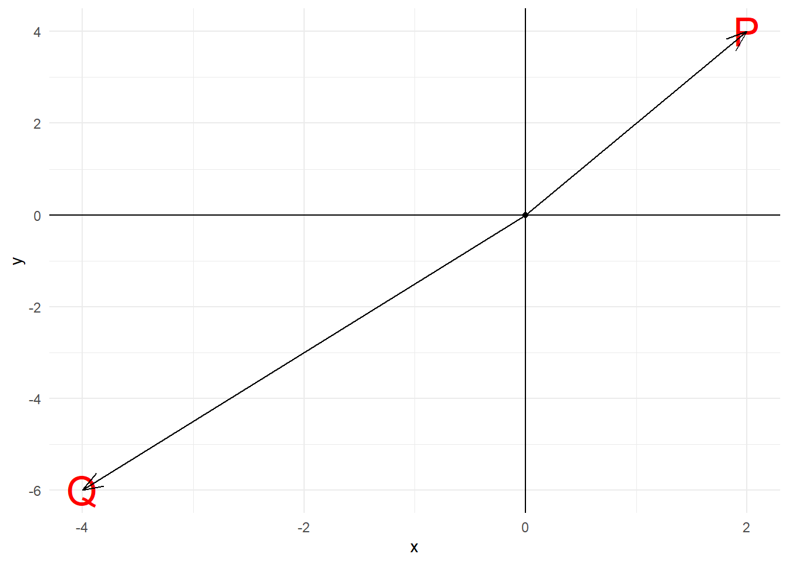
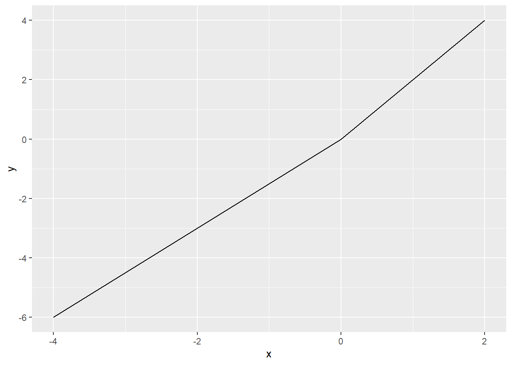

1 Fundamental Concepts of Mathematics
Tidak ada satu pun sifat yang diberikan Tuhan kepada kita yang tidak berguna - HAMKA
Tidak ada satu pun sifat yang diberikan Tuhan kepada kita yang tidak berguna - HAMKA
Learning Objectives
At the end of the chapter, students are expected to gain the following knowledge:
t-1-1 I am able to solve word problems and applications related to ratio and proportion.
t-1-2 I am able to identify the different form of numbers.
t-1-3 I am able to convert fraction to decimal and vice versa.
t-1-4 I am able to convert fraction and decimal to percentage and vice versa.
t-1-5 I am able to solve arithmetic operations using BODMAS rule.
t-1-6 I am able to solve arithmetic operations involving fraction and decimal by using calculator.
t-1-7 I am able to solve linear equation in one variable.
t-1-8 I am able to solve word problems and applications related to linear equation in one variable.
t-1-9 I am able to plot linear equation graph and interprate the graph.
1.1 Introduction
This chapter introduces the students with the fundamental concepts of mathematics that is divided into there main sections, namely, 1. Introduction to arithmetic operations, 2. linear equations, and 3. Fractions, decimals, ratios and percentages.
1.2 Classification of real numbers
The real number system began to be learned and used in the early stages of schooling. However the development of real numbers must be understood and used more carefully so that a mathematical sentence can be fully defined. The following is an explanation of the development of real numbers.
A number is a feature of a set that does not depend on the properties of the elements of that set. The intended feature is represented by set symbols
\[\{ 0, 1, 2, 3, 4, 5, 6, 7, 8, 9 \}\]
common in everyday use. The symbols were inherited from the Indians and introduced by the Arabs. Each symbol is given a digit or number name and any combination of those symbols is called a number. These numbers are known by their properties as follows shown in the table and figure illustration below.
| Type | Description | Example |
|---|---|---|
| Natural Number (\(N\) or \(Z^+\)) | Positive numbers | \[\{1,2,3,4,…\}\] |
| Whole Number (\(W\)) | 0 and positive numbers | \[\{0,1,2,3,4,…\}\] |
| Negative Integers (\(Z^-\)) | Negative numbers | \[\{…, -3,-2,-1\}\] |
| Integers (\(Z\)) | natural numbers, negative number, and zero | \[\{...,-2,-1,0,1,2,3,4,…\}\] |
| Rational Numbers (\(Q\)) |
Numbers that can be written in the form of a fraction \(\frac{a}{b}\) where \(a\) and \(b\) are integers and \(b\ne0\) Example: \(\frac{1}{2}=0.5\), \(6\frac{1}{3}=6.3333…\ (6.\bar{3})\) |
\[\{ …,-3,-\frac{5}{2},0,\frac{2}{5},1,4.67,5.\bar{013}, …\}\] |
| Irrational Numbers (\(I\)) | Numbers that cannot be written in the form of \(\frac{a}{b}\) or numbers that do not have finite or repeated decimal digits |
\[\{…,\pi,\sqrt{13},e,…\}\] \[\sqrt{2}=1.4142136…\] \[\pi=3.14159265…\] \[e=2.71821818…\] |
| Real Numbers (\(R\)) |
All rational and irrational numbers \(R=Q\cup I\) \(= \{\infty ,..., -\infty \}\) |
\[\{…,-4,-\frac{5}{3},0,2,3.69,\sqrt{2},\pi,…\}\] |
Table 1: Table summary of some number sets in a real number set
Figure 1.1: Real numbers and important subset
1.2.1 Real Numbers
Real numbers denoted as \(R\) as in Figure 1.1 consist of all numbers that can be categorized as rational numbers (\(Q\)) and irrational numbers (\(I\)).
1.2.2 Rational Numbers
A rational numbers denoted as (\(Q\)) is defined as numbers that can be written in the form of a fraction \(\frac{a}{b}\) such that \(a\) and \(b\) are integers and \(b \ne 0\). Examples of rational numbers that takes the form of a fractions as define are \(\{ \frac{18}{5}, \frac{2}{3}, 5=\frac{5}{1} \}\) or even \(\{ \sqrt{9}=3=\frac{3}{1} \}\).
In addition, rational numbers can also takes the form of numbers that have terminating decimals or repeated digits. Among the examples are numbers such as \(\{ 2.75, 1.5, 0.8, 0.666666, 0.0238238\bar{238} \}\). The first three values in the previous example are considered to have a characteristics of a terminating decimals, while the last two numbers are examples of rational numbers with repeated digits.
1.6 Linear equations
A linear algebra term is a term with a variable that has a power of 1. While a linear algebra expression is a combination of one or more linear terms connected by addition or subtraction operations or both. Therefore, a linear equation can be defined as an equation consisting of linear algebraic expressions or linear algebraic expressions and numbers.
1.6.1 Linear equation with one variable
As the name implies, namely one-variable linear equation is identified with the = sign (equal to) and contains \(1\) (one) unknown. Basically, a one-variable linear equation is an equation in the form of an open sentence that is connected by a = (equal to) sign and only contains or has \(1\) unknown.
Why is it said to be an open sentence? Because the basic concept of an open sentence is a sentence whose truth cannot be known, it could be true, it could be wrong. For example, \(x+4=9\), if \(x=5\) then, the sentence is \(true\), because it is true that \(5+4=9\), but if \(x=1\), then the sentence is \(false\), because \(1+4=5\), not \(9\).
Well, in general the form of a one-variable linear equation is
\[ax+b=0\]
where \(a\) = coefficient; \(b\) = constant; and \(x\) = variable.
Keep in mind that the variable used does not have to be a variable \(x\), \(x\) in the equation only represents or represents a variable, for example \(2y+5=0\), where the coefficient is \(2\), the variable is \(y\), and the constant is \(5\).
Try again with the linear equation \(4p–4=0\), then the coefficient is \(4\), the variable is \(p\), and the constant is \(-4\) (do not forget the minus, guys).
1.7 Graphing linear equations
## -- Attaching packages --------------------------------------- tidyverse 1.3.1 --## v ggplot2 3.3.3 v purrr 0.3.4
## v tibble 3.1.2 v dplyr 1.0.6
## v tidyr 1.1.3 v stringr 1.4.0
## v readr 1.4.0 v forcats 0.5.1## -- Conflicts ------------------------------------------ tidyverse_conflicts() --
## x dplyr::filter() masks stats::filter()
## x dplyr::lag() masks stats::lag()
1.9 Ratio
In general, ratio is a way to relate or compare between two items or more. In this book, we will discuss the concept of ratio of two quantities and ratio of three quatities. An important note for consideration when dealing mathematical problems with ratio is to make sure that comparison is on quatities with the same unit of measurement.
1.9.1 Ratio of two quantities
Ratio of two quantities is a comparison between two quantities that have the same unit. The ratio of two quantities can be written in the form \(a:b\) or \(\frac{a}{b}\), provided that \(b \neq 0\) and \(a\) and \(b\) have the same unit.
Example 1
The ratio of money at hand for Zul and Jefri is \(3:5\). Zul has RM210.
(a) Calculate Jefri's money.
(b) Given that the ratio of money had by Zul to Mat is \(2:7\), calculate the sum of money that both Zul and Mat have.
Solution
| Zul | Jefri | Total |
|---|---|---|
| 3 | 5 | 8 |
| 210 | x |
We consider any two columns with one unknown; i.e., we choose column first two columns.
\[\frac{3}{210} =\ \frac{5}{x}\] \[x =\ \frac{5}{3}(210)\] \[x =\ RM350\]
Â
| Zul | Mat | Total |
|---|---|---|
| 2 | 7 | 9 |
| 210 | y | z |
Since the question asked for the sum of money, we have two options to solve the problem. First, by calculating the money that Mat have and sum with Zul's money; or, secondly, we can calculate the total directly.
To calculate the total directly, we used the first and third column.
\[\frac{2}{210}=\frac{9}{z}\] \[z=\frac{9}{2}(210)\] \[z=RM945\]
| Zul | Jefri | Total |
|---|---|---|
| 3 | 5 | 8 |
| 210 | x |
We consider any two columns with one unknown; i.e., we choose column first two columns.
\[\frac{3}{210} =\ \frac{5}{x}\] \[x =\ \frac{5}{3}(210)\] \[x =\ RM350\]
| Zul | Mat | Total |
|---|---|---|
| 2 | 7 | 9 |
| 210 | y | z |
Since the question asked for the sum of money, we have two options to solve the problem. First, by calculating the money that Mat have and sum with Zul's money; or, secondly, we can calculate the total directly.
To calculate the total directly, we used the first and third column.
\[\frac{2}{210}=\frac{9}{z}\] \[z=\frac{9}{2}(210)\] \[z=RM945\]